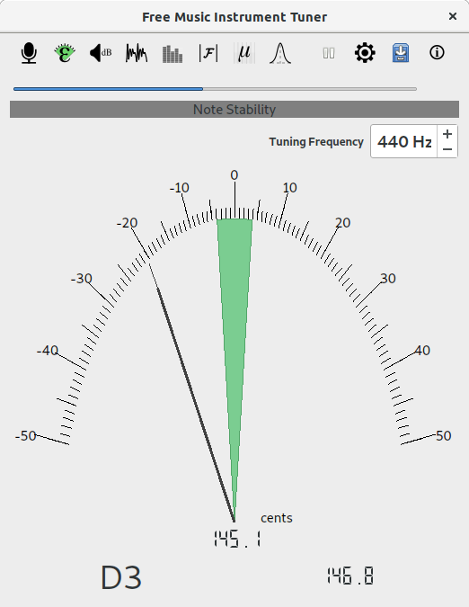
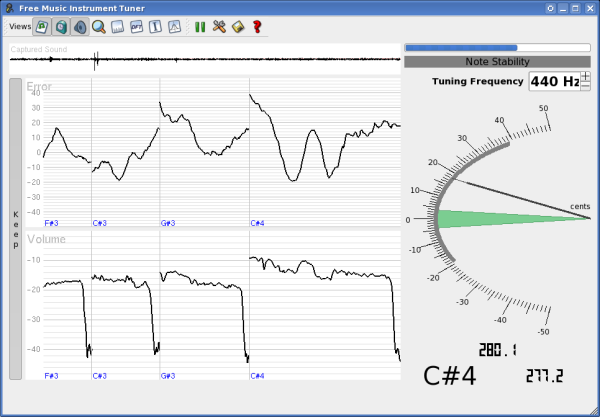
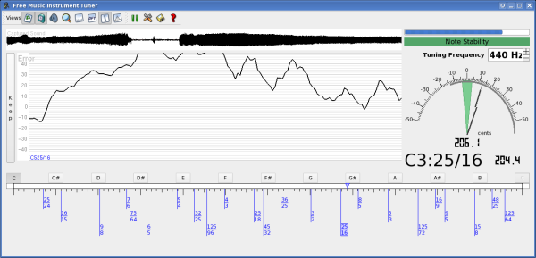
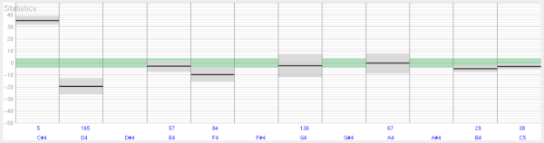
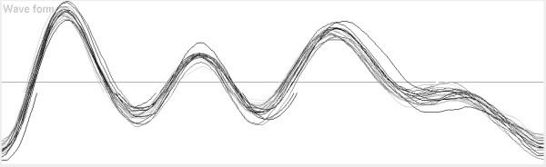
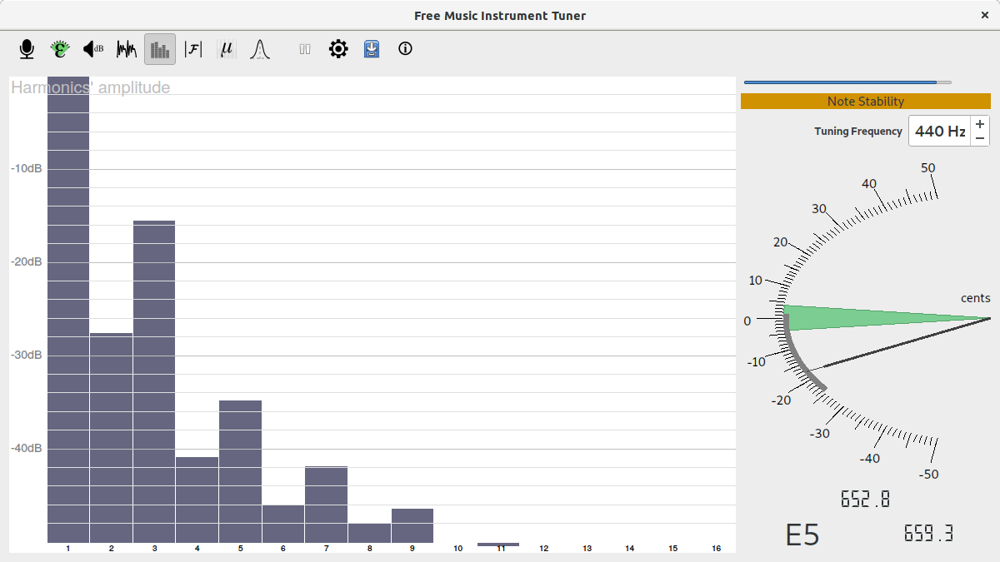
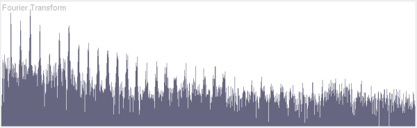

FMIT
Free Music Instrument Tuner
Home
Screenshots
FAQ
Releases/Download
View on GitHub
Screenshots
the simplest configuration

with volume view and previous notes shown

with the microtonal view

statistics module

wave form view

harmonics view

DFT module
